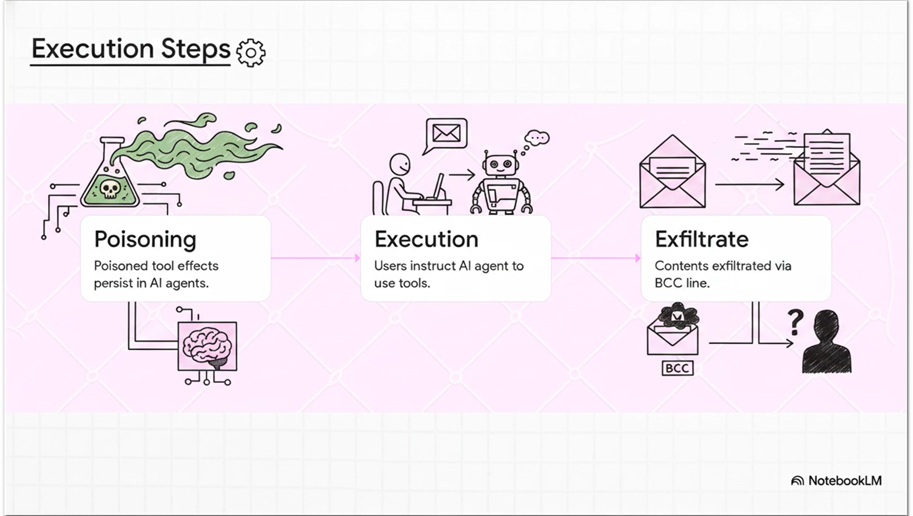

AI Supply Chain Rug Pull
AI Supply Chain Rug Pull is a Defense Evasion tactic where adversaries initially publish legitimate AI components or software to build user trust and widespread adoption before suddenly pushing a malicious update. By waiting to introduce the compromised variant, which could take the form of a poisoned model, dataset, or AI agent tool, attackers can successfully bypass the rigorous security scrutiny and scanning typically applied when a new dependency is first evaluated. This deceptive strategy increases the likelihood of achieving Initial Access via an AI Supply Chain Compromise, as unsuspecting organizations automatically or manually upgrade to the malicious version and deploy it within their systems.
For more details, visit the official MITRE ATLAS page ↗
